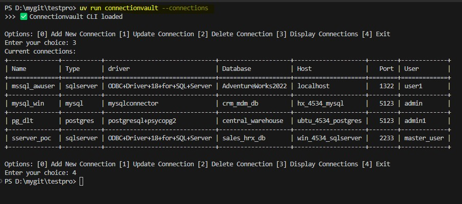
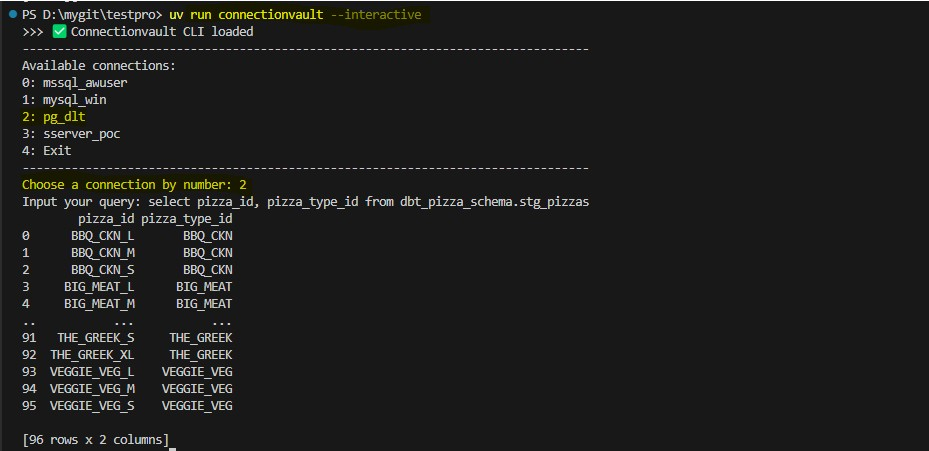

ConnectionVault
🔗 Unified DB Connection Manager for Python Data Engineering Projects
This Python package provides a centralized YAML-driven interface for managing database connection metadata—across Oracle, MySQL, SQL Server, and PostgreSQL. Define your credentials and settings once, and seamlessly:
- 🔄 Add, update, remove, or test connections via an intuitive CLI
- ⚙️ Retrieve ready-to-use connectors in your data pipelines with just one line of code
- 📁 Simplify credentials management in teams and projects
- ✅ Validate database access interactively before running pipelines
Whether you're automating ingestion scripts, deploying DAGs, or prototyping SQL workflows, this tool abstracts away the boilerplate and gives you production-ready DB handles instantly.
🆘 Part 1: Getting Help via CLI
View available commands, syntax, and usage examples instantly with the built-in --help flag. The CLI interface is intuitive and beginner-friendly.
🔧 Part 2: Managing Connections
Add, update, or remove database connections directly from the terminal or Python code. All configuration is stored centrally in a YAML file for simplicity and portability.
✅ Part 3: Testing Database Connections
Test your configured connections before executing a pipeline. Instantly confirm database availability and credentials using the test command.
🐍 Part 4: Running Query from CLI
Directly from CLI, retrieve a live database connection and get output for your SQL query.
📦 Part 5: Versioning, Templates, and Config Paths
The utility also includes several other commands to streamline your experience:
- 🆔 Check Current Version: Use
connectionvault --versionto confirm which version you're using—great for CI logs or debugging. - 📄 Show Example Templates: Run
connectionvault --exampleto view a sample python usage code. - 📁 Locate Config File: Use
connectionvault --yamldirto quickly print the absolute path of the active YAML file.